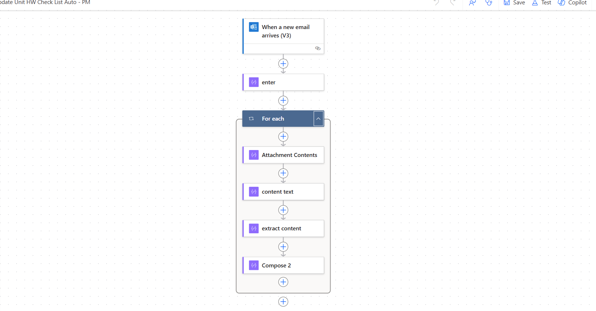
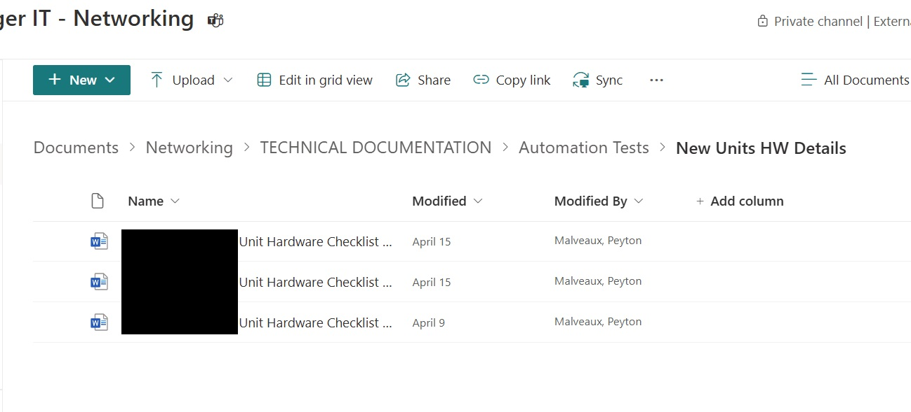
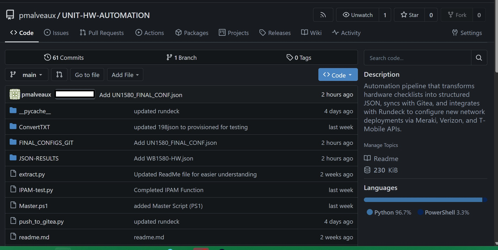

Network Configuration Automation
Automated end-to-end Meraki network provisioning using Python, IPAM, and Monday.com integration.
Project Overview
This project automates network configuration for new restaurant units. Before the script runs we extract emails containing DOCX files with Hardware Checklist via a Power Automate Workflow. Power Automates moves these docs to a SharePoint Site where we download the files from. While files are located, the script converts them to .TXT and then turns the checklist into a workable JSON file and uploads to GitEA. Once the raw JSON is uploaded it pulls data from Gitea, IPAM, and Monday.com, generates full network configuration files, and uploads a finalized JSONs back to Gitea for Meraki provisioning via Rundeck.
- Parses hardware checklists to build structured device configs.
- Queries IPAM for VLAN subnets and generates static IPs per device.
- Builds full JSON configuration including Meraki-specific fields for VLAN setup.
Automation Workflow
- Hardware Checklist Parsing: Reads JSON files from Gitea to extract routers, switches, access points, and MG info.
- IPAM Subnet Lookup: Pulls secured, unsecured, net-mgmt, and kitchen VLANs by parsing comment tags.
- Static IP Generation: Applies deterministic IP patterns (e.g., .254 for gateways, .11–.19 for APs, .220+ for switches).
- Meraki Fields Injection: Adds VLAN ID mappings, gateway IPs, umbrella subnets, and template IDs to the final JSON.
- Upload: Pushes JSON config files to a Git repository to trigger Rundeck for downstream provisioning.
Screenshots and Sample Files
Visual examples of data extraction, JSON generation, and Meraki dashboard automation, and GitEA page
{kind=link}

Power Automate Flow to Pull Checklist Emails
{kind=link}

Files Uploaded to SharePoint Site via Power Automate
SAMPLE: Meraki JSON Config File (JSON) (REDACTED)
{kind=link}

GIT EA